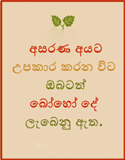

සරණට
අරුණෝදයක්
ප්රජා සත්කාරක පදනම


පදනමේ තතු
අළුත් ලිපි
- ග්රාමීය ක්රීඩා දක්ශතා ඇති දරුවන්ගේ දක්ශතා ඔප්නැංවීම
- මනස සෙමින් වර්ධනය වන දරුවන් උදෙසා ඔවුන්ගේ කලාකාමි දක්ශතා විදහා දැක්වීමට අවකාශය ලබා දීම
- සරණට අරුණෝදයක් ප්රජා සත්කාරක පදනමට හමු වූ තවත් දක්ශ දියණියක්
- අඩු ආදායම් සහිත පවුල් වල ජීවන තත්වය නඟා සිටුවීමට දායක වීම
- බෝධි පූජා පිංකම් පැවැත්වීම



-
 පදනමේ අනගත සැළසුම් සාකච්ඡා කිරීම
පදනමේ අනගත සැළසුම් සාකච්ඡා කිරීම
-
 රටට සෙත් පතා පවත්වන වාර්ෂික බෝධි පූජා පිංකම හා පහන් පූජාව
රටට සෙත් පතා පවත්වන වාර්ෂික බෝධි පූජා පිංකම හා පහන් පූජාව
සරණට අරුණෝදයක් පදනමට සාදරයෙන් පිළිගනිමු !

සරණක් අවැසි මිනිසුන්ට පිළිසරණක් වන්නට මාතර දිස්ත්රික්කයෙන් ආරම්භ කරන ලද සරණට අරුණෝදයක් ප්රජා සත්කාරක පදනම ශ්රී ලංකාව මුළුල්ලෙහිම සමජ සංවර්ධන හා සුභසාධන ව්යාපෘති වල නියෙලෙන ලාභ අපේක්ෂාවෙන් කටයුතු නොකරන ස්වේච්ඡා සමාජ සංවිධානයක් වන්නේ ය...
අප විසින් දැනට ක්රියාත්මක කරමින් පවතින හා ඉදිරියේදී ක්රියාත්මක කිරීමට යෝජිත ව්යාපෘති සාර්ථකව ඉදිරියට කරගෙන යාම සදහා අපි ඔබගේ කාරුණික අනුග්රහය පතන්නෙමු.
අපේ ආරම්භය

සරණට අරුණෝදයක් ප්රජා සත්කාරක පදනම ජාති, ආගම්, කුල භේදයන්ගෙන් තොර ශ්රී ලාංකික පුරවැසියන්ගෙන් සැදුම්ලත් කාර්යමණ්ඩලයක් විසින් 2011 දෙසැම්බර් 15 වැනි දින ආරම්භ කරන ලදී.
තව කියවන්න...